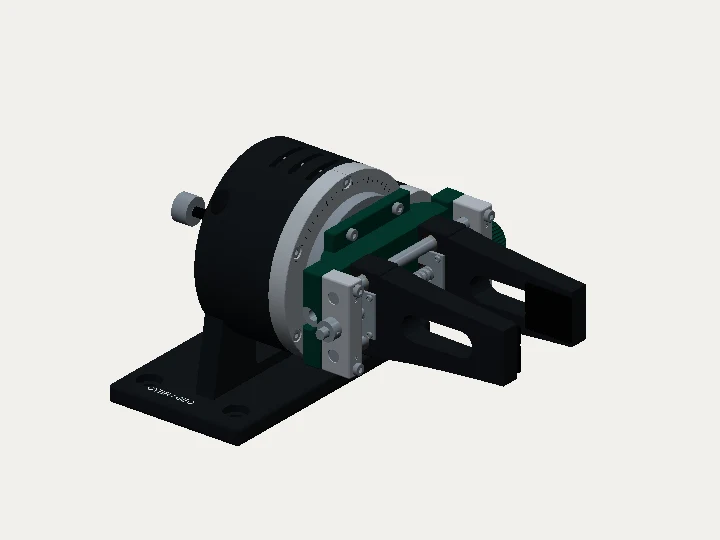

SELECTED WORK / SIX PROJECTS
Objects, experiments & motion01 / GEO
ORBIT
Inspection wrist / parallel gripper

Recorded demonstration
↔ SCRUB
SELECTED WORK / SIX PROJECTS
Objects, experiments & motion01 / GEO
Inspection wrist / parallel gripper

Recorded demonstration